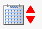

Blacksmith Applications, www.blacksmithapps.com
The online help system uses the "default" terminology as it is in the base system. If your organization has requested that some of the terms be customized, then those customized terms may not correlate with the terms used in the online help. For example, you may see the term Distributor in the online help, but your organization may have requested that the term Distributor be changed to Customer in the application.
Gray links indicate that either the link is inactive, your organization hasn't installed it, or you do not have permission to use it. For example, only system administrators can click on the [settings] link.
Every page you visit has a small toolbar with links at the bottom right of the page. These links include the [Privacy Statement], [Previous] page and [Next] page links (these are similar to a browser's Back and Forward links but pertain only to the Blacksmith application), a [Contact Us] link, which makes it easy for you to send us a message about anything at any time; and a [Logoff] link.
When you use the Refresh feature from your browser (View, Refresh), FORGESM refreshes your screen with the Home Page. If you right-click and select Refresh from the right-click menu, however, the page you are on is refreshed and updated.
Right-click menus: On many pages, FORGESM provides a special right-click menu. On other FORGESM pages, in certain sections you may see a little cursor with a question mark next to it, which means there is a special right-click menu available with additional details.
You can also use the standard Internet Explorer right-click menu.
The Blacksmith-specific right click menu is intended to give you a quick and easy way to access common Blacksmith functions. Use of this right-click menu is strictly optional, and you can accomplish its functions without using it. See a picture of the Home_page_right-click_menu.htm.
When an entry requires a date, you can enter it directly, or you can select it using the calendar feature. To use the calendar, click the calendar icon

next to the field that requires a date, and the calendar displays. Use the pull-downs to select the month and year, and then click on the day. The calendar window closes after you select the day, and the information you selected is shown in the date field. After entering or selecting a date, you can use the red up and down arrows next to the calendar icon to adjust the date. When you are located in a date field, if you click the up or down arrow next to the icon, the system automatically adjusts from the current date.Provided your organization uses it, Xmessenger is always available to allow you to chat with other active, logged in FORGESM users.
Some FORGESM pages display lists of items that include a checkbox in the header row at the top of the listing. This checkbox allows you to easily select all items or deselect all items in the list.
For data entry, some FORGESM pages use a standard Stored Records/Edit Records page. To enter a new record on this page, enter the data in the Edit Record section and click the [save data] link. If there is already data in the Edit Record section, click the [create new entry] link to clear it and then enter the data for your new record.
Many pages display columns that you can sort on. Click a column header to sort the list by that column.
A triangle displays indicating the column currently used for the sort, and whether the sort is ascending or descending. To reverse the sort order of a sort column, click the column header again; the sort order reverses, and the triangle reverses orientation to reflect the change in sort order.